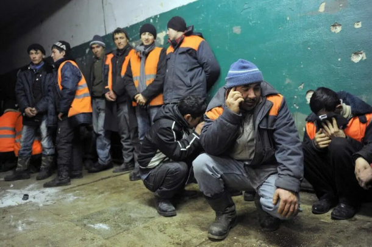
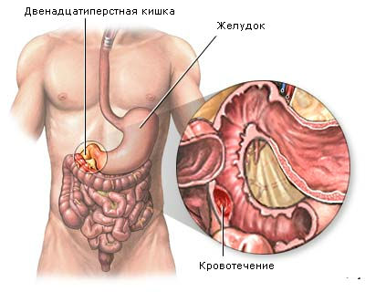
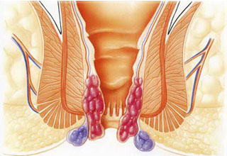

Узоқ йиллар кутилган кашфиёт...
Табиатнинг кўзга кўринмас мўжизасида геморройнинг давоси топилди!
Ғоз ёғи минг йиллардан бери халқимиз табобатида ишлатилиб келинади.
Уни куйган терига, яллиғланиш касалликларида малҳам сифатида ишлатишади.
Аммо унинг нафақат юқоридаги касалликлар балки халқимиз орасида кенг тарқалаётган касаллик
геморрой касаллигида ҳам шифо бўлиши муҳим кашфиётга айланди.
Хўш, геморрой касаллиги нима учун бунчалар оммалашиб бормоқда. Унинг асл илдизлари қаерда?
Қабзият(Тез-тез ич қотиши)
Камҳаракат турмуш тарзи (гиподинамия) ёки камҳаракатлик билан боғлиқ иш
Ҳомиладорлик (Туғруқ жараёнида ва фарзандли бўлгандан кейин)

Заҳ жойларда ишлаш оқибатида анал тешигининг яллиғланиши
Вақтида эътибор берилмаган геморрой касаллиги оқибатлари. Операция ечим эмас!

- ичакдан қон кетиш
-некротик ўзгаришлар
- саратон
Геморроидал тугундаги кенгайган томирлар кўпинча шикастланиши
ва ёрилиши мумкин – бунда эса қон кетиш хавфи ортади

Сурункали геморрой томирларда қон тромблари шаклланишига олиб келади.
Вақт ўтиши билан бу қон тромблари узулиб, бошқа ички органларнинг
томирларини тўсиб қўйиши мумкин
Операциядан кейинги оғриқлар...
Операция оғриқли бўлиши мумкин ва анъанавий геморрой операциялари ҳам бундан мустасно эмас.
Ушбу процедурадан сўнг сиз бир неча кун давомида ноқулайлик билан курашишингиз мумкин.
Барча операциялар сингари, бемор геморрой операциясидан кейин баъзи хавф ва асоратларга дуч келиши мумкин, масалан:
- Бош айланиши ёки заифлик
- тартибсиз оралиқларда қон кетиш
- операциядан кейинги оғриқ
- қабзият
- операциядан кейин инфекция
- назоратсиз ичак ҳаракатлари
- такрорий геморрой хавфи
- сийиш қийинлиги
- анал инфекция
Барчаси сиз учун оғриқли тугаб, операция столига ётишдан олдин.
Ўзингизни ушбу касалликдан қутқариб қолинг!
Тақиқланган кашфиёт! Геморрой сизни безовта қилса...
Олимларнинг узоқ йиллик изланишларидан сўнг геморрой касаллигига яна бир ўзгача
такрорланмас даво топилди. Таркибида бутун дунё шифокорлари тан олган ғоз ёғи ва
туя ўркачидан олинадиган махсус ёғни ўзида мужассамлаштирган ГемоПро маҳсулоти ишлаб чиқилди.
 Ушбу маҳсулот гемморой тугунларини сўрдиришга, оғриқни камайтириб, ҳолатни енгиллаштиришда
жуда самарали хисобланади.
Энг муҳими махсулот свеча кўринишида бўлиб, ички азоларга мутлақо
ҳавфсиз ва тўғридан-тўғри қўлланилгани учун самараси тез хисобланади. Маҳсулот қутисида табиий
таркибли чой ҳам мавжуд бўлиб, геморройни келтириб чиқарувчи ошқозондаги бузилишларга даво сифатида қўлланилади.
Ушбу маҳсулот гемморой тугунларини сўрдиришга, оғриқни камайтириб, ҳолатни енгиллаштиришда
жуда самарали хисобланади.
Энг муҳими махсулот свеча кўринишида бўлиб, ички азоларга мутлақо
ҳавфсиз ва тўғридан-тўғри қўлланилгани учун самараси тез хисобланади. Маҳсулот қутисида табиий
таркибли чой ҳам мавжуд бўлиб, геморройни келтириб чиқарувчи ошқозондаги бузилишларга даво сифатида қўлланилади.